今天的“每周转载”，俺来分享一下前几天“土耳其击落俄罗斯战机”的事情。这可是北约成立几十年来，头一次主动击落北极熊的军用飞机，值得关注一下。
叙利亚地图
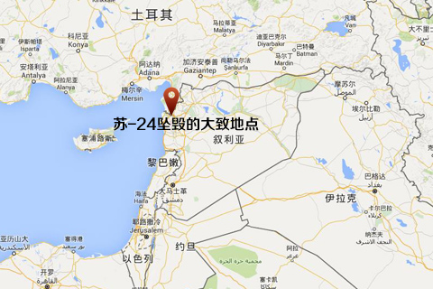 （下面这张是叙利亚内战中几大派系的割据图）
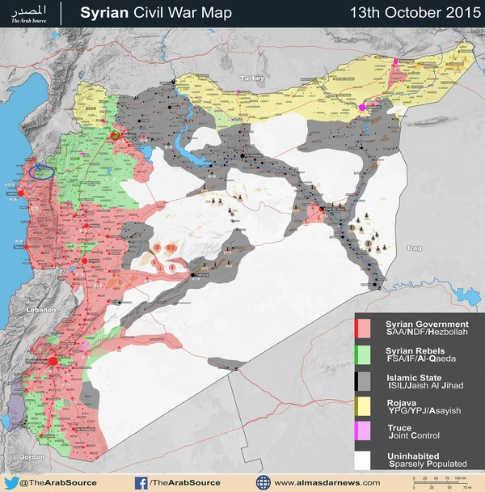
两种战机的照片
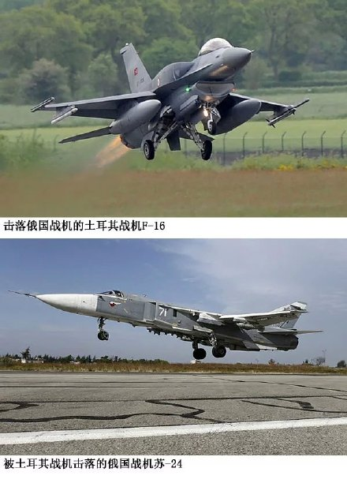
被击落的俄罗斯苏-24战机
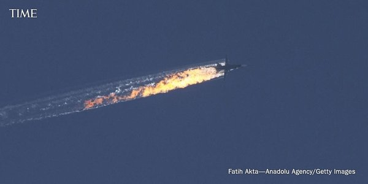 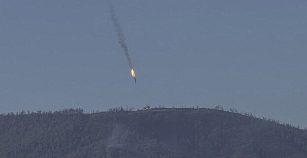 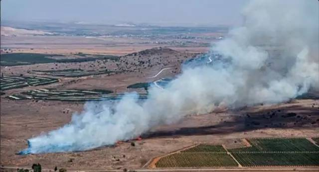 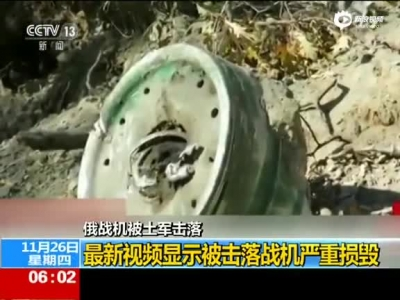
苏-24的俄军飞行员尸体被叙利亚反对派武装“土库曼旅”发现，且已经死亡。
（编程随想注：“叙利亚反对派”跟“伊斯兰国”是【不同的】武装派别，参见前面的“叙利亚内战图”）
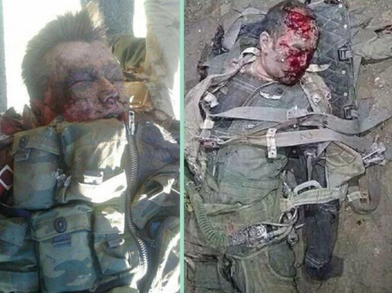
叙利亚反对派武装土库曼旅还公布了从飞行员身上缴获的两个把柄类物件，相信是俄飞行员降落伞上的某个部件。
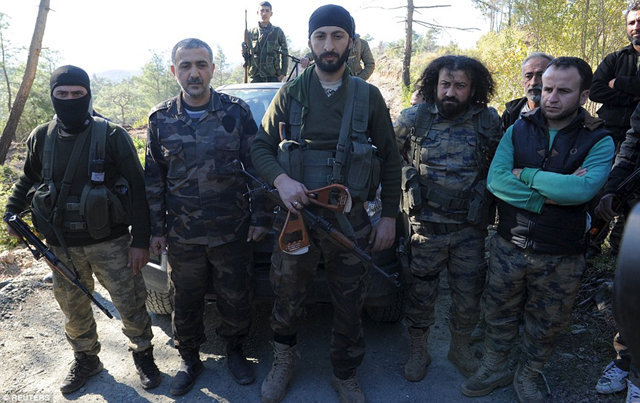
俄前往搜救的直升机被土库曼旅武装人员击毁
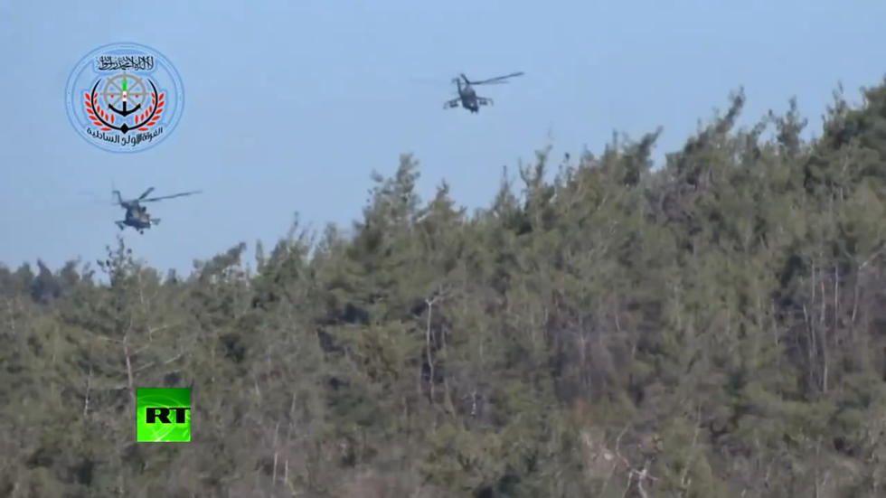 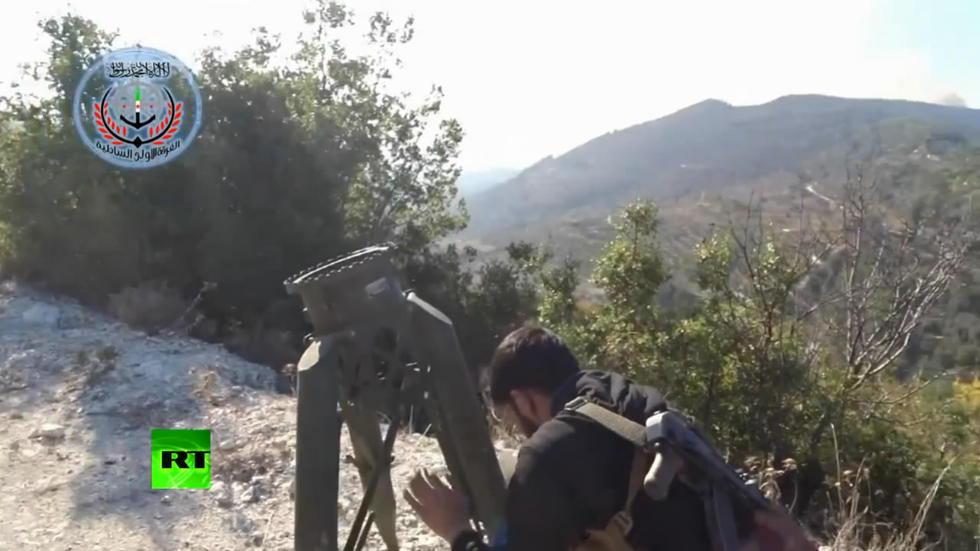 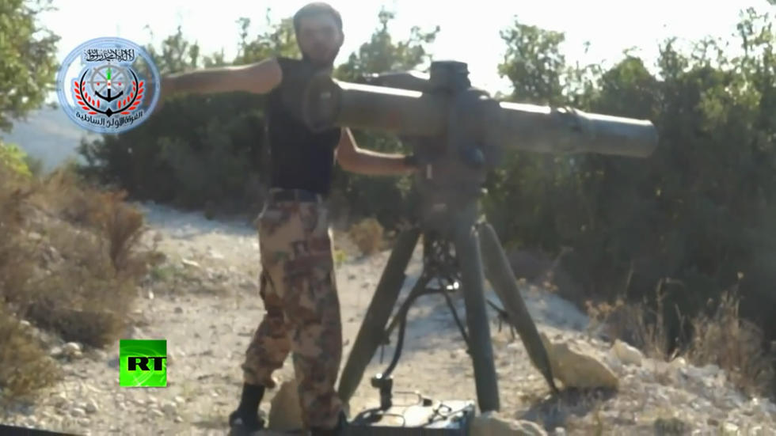 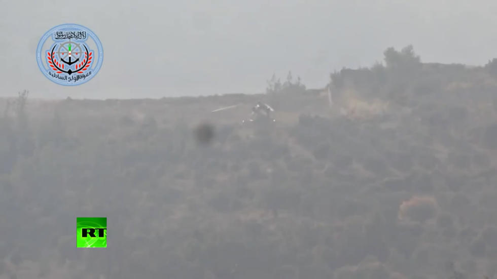 
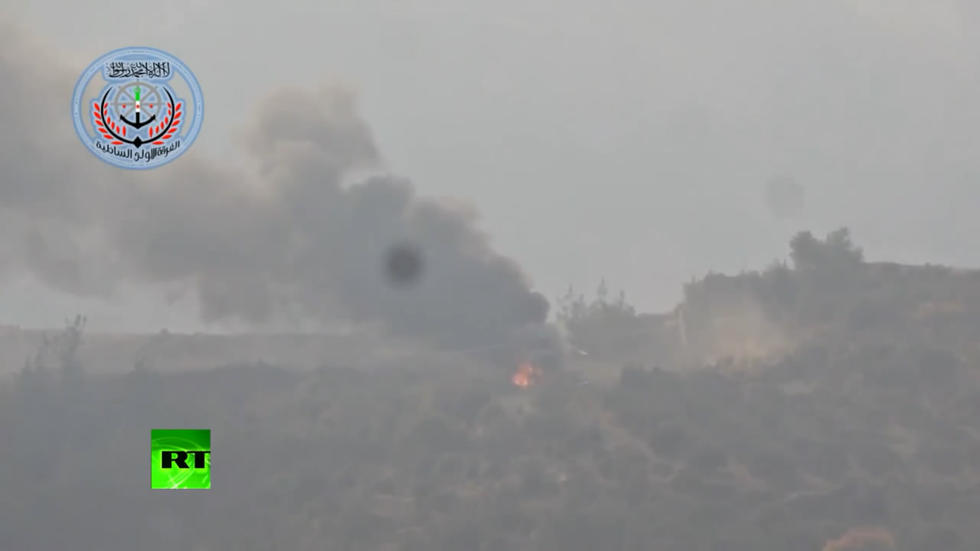
土耳其递交给联合国的一份情况报告中称：
11月24日早，2架国籍未知的SU-24战机飞向土耳其领空。
土耳其通过“紧急”频道5分钟内警告了它们10次，要求往南飞。但这两架飞行在19000英尺的战机最终进入土耳其的领空并持续17秒钟。
之后，一架驶离，另一架则被土耳其空军击落，坠毁在叙利亚境内。
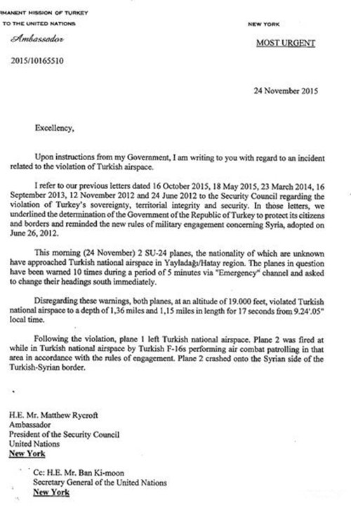
奥巴马表态：敦促俄土两国必须通过谈判解决问题
他指出，保卫自己的领土和领空是一国正当的权力。
俄国如果真的意在打击IS，就不会把空袭目标锁定在非伊斯兰国的土族武装上。
“问题出在俄国把太多精力用在支持阿萨德而非打击IS上”
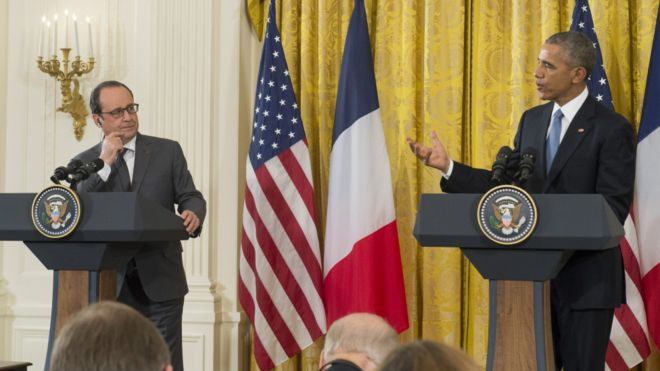
土耳其为何击落俄罗斯战机？ @ 纽约时报
俄国将对土耳其采取大规模经济制裁 @ BBC
战机事件让俄罗斯与土耳其撕破脸 @ 纽约时报
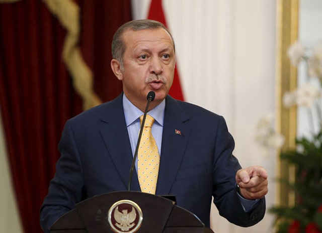 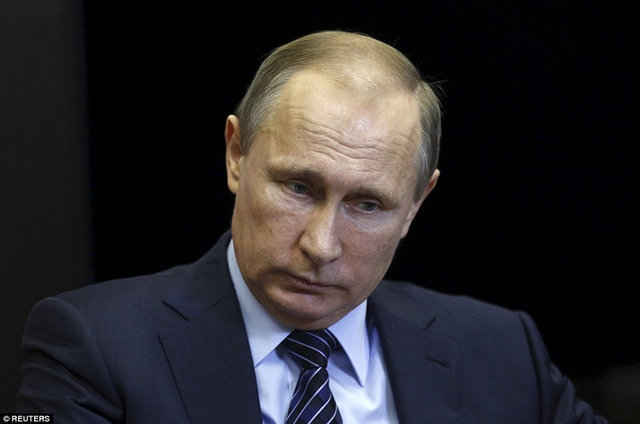
俄罗斯到底有没有进入土耳其领空？双方各执一词。
（红色——俄罗斯声称的飞行路线；紫色——土耳其声称的飞行路线）
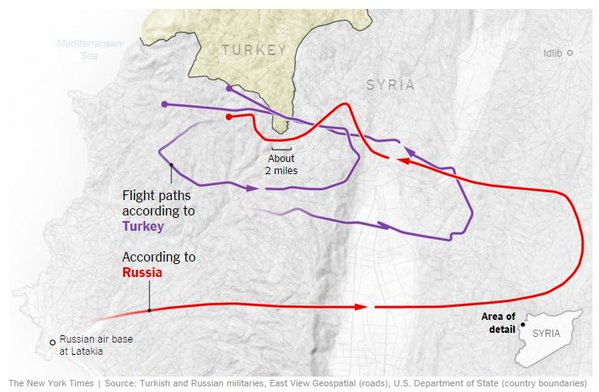
幸存飞行员：未曾收到土方警告
被击落战机里幸存的俄罗斯飞行员说，不论是从视觉角度还是无线电方面，都没有收到土方的任何警告。
俄军方宣布，为保证类似悲剧事件不再发生，今后俄轰炸机在叙利亚上空执行空袭任务时，将一直有战斗机实施掩护。
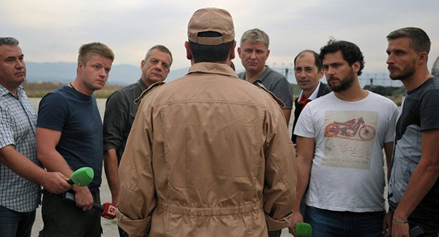
土耳其军方公布录音——击落俄机前曾经发出警告 @ 新浪新闻
破破的桥：土耳其击落俄罗斯战机的事件背景介绍 @ 新浪微博
黎蝸藤：
土耳其的事說兩句。毛軍機闖入突厥領空不只一次，之前一直突厥一直在抗議，毛不當一回事。
從國際法上說，突厥擊落闖入領空的毛軍機符合國際法。
突厥是北約成員國，入侵突厥等於和整個北約作對。毛可以欺負烏克蘭和格魯吉亞，但不敢直接入侵北約國家。普京再悲憤也沒有用。
黎蝸藤：
俄羅斯又被打臉了，救回的飛行員剛說沒有聽到土耳其的警告，土耳其就放出錄音證實多次發出警告。想想也知道了，土耳其能夠向聯合國細緻地說出5分鐘警告十次，必然有充分證據。豈是俄羅斯人信口開河可以否認的？
陈如是说：
看图。这楔角宽度不过十几公里，一架巡航速度的飞机从进入到离开，只需要一分多钟。而地面防空系统从追踪、识别、锁定、发射到击中，一分钟是不够的。以火鸡的射击水平，最大的可能是，前面四个步骤是在毛子飞机尚未进入火鸡领空时就完成了……这对毛子而言敌意已经足够。而且飞机还掉在境外。火鸡杯具
理性的白痴：
一，毛子军机去打的不是ISIS而是土耳其支持的叙反政府武装；
二，土耳其确实在伏击毛军机，追踪锁定应该是在土境外就做的，但是毛军机应该是中间确实有越境土领空，不然土不会有这么精准的准备；
三，土是北约成员国，所以不会演变成战争
三进三进：
采访俄罗斯幸存飞行员的记者，确实有部分是穿短袖体恤和短袖衬衫，这录相是夏天的季节拍摄的。连央视也被欺骗了。
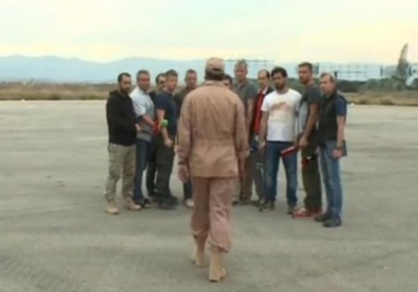
俄外长拉夫罗夫：
俄罗斯不准备与土耳其开战
普京：
若再次发生类似事件，俄方将作出回应
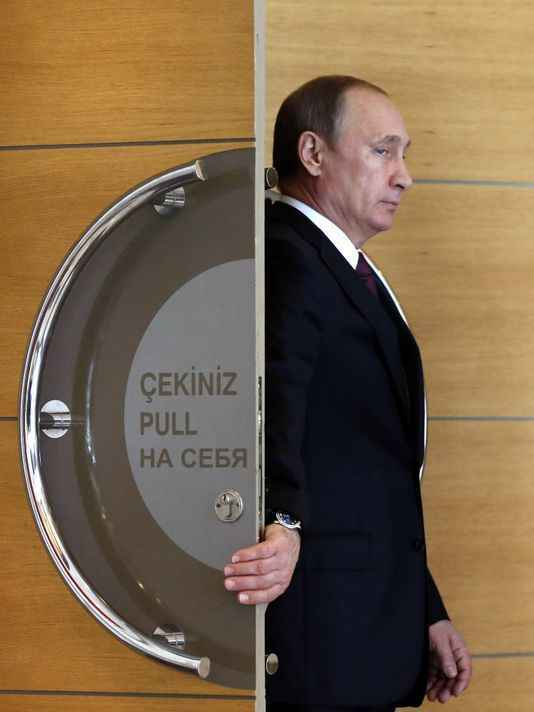
KenWong_：
酒吧里，普京正吹牛当年打架多么狠，突然后脑袋上挨了土耳其一啤酒瓶，顿时血流满面。
普京手捂着脑袋回过头来说，你有胆再敲老子一下试试？
#网友评土耳其击落俄罗斯战机
学者从经济上谈俄困局：打掉牙肚里咽算了？ @ 腾讯新闻
valkyrie：俄罗斯军机被土击落真相——普京这次为什么怂了？ @ 共识网
Paul郑褚：
呵呵，土耳其是北约国家，你们普大大敢打土耳其那才是吃了豹子胆。
春秋药王：
我一直觉得，硬了那么久的普京，这次会巧妙地疲软。
国内经济的持续下滑，已让俄罗斯打不起一场像样的战争。而且土耳其的背后是强悍的北约。
所以普京很可能会发动爱国青年，把土耳其骂个狗血淋头，然后在国内抓俄奸，抵制土货，砸土产车，在推特上核平土耳其，让鹰嘴将军怒发冲冠，最后红光满面圆满收场
昆仑风：
普京大帝太不给黄俄干儿子面子了。
英雄的俄罗斯人民、战斗民族、世界和平的主要力量，你倒是打啊！不然咱爷儿俩的脸面都没地儿搁了，不是嘛？
莫扎特93：
以普特勒同志为核心的新沙皇当局，实在是没胆量“对土耳其发动战争”。
土耳其这个国家其实也没啥，不过是北约一成员国。但它的背后是强大的美国、是顶尖级现代化装备、横跨欧美的国际军事组织——北大西洋公约组织。
你和你那个跟着你瞎起哄的傻兄弟惹得起人家吗？不过你终于明智地认识到，土耳其可不是中国，可不是那么容易欺负的。
网易网友：
【土耳其太小家子气】
俄国军机误入土耳其领空被击落，土耳其真是太小气了。
这让我想起了缅甸军机五次入侵我国领空四次投弹，炸死炸伤我国边民。
我国的反应是继续援助缅甸30亿美元，这充分体现了一个大国的风范和气度。
（某不知名网友）：
土耳其没有航母，没有核武，上去就打了天朝干爹一记耳光，真牛逼！
天际流云：
1964年6月，中国在老挝康开的外交机构被美国飞机炸，死一人重伤5人，不要说赔偿，连道歉也无一个的！
几乎所有强国、弱国都敢惹毛时期的中国。
1964年，中国在巴西的准外交人员9名，连同家属一起被巴西当局逮捕，受尽折磨，关押审判达一年多！
说那个时代有多高的国际地位，只是吹嘘大话而已。
铁塔媳妇33：
【土耳其公布的资料显示，俄国战机假借反恐轰炸叙利亚反对派时飞越土领空，被土战机击落】
普京下令撤回土耳其叙利亚边界的所有俄军。一个小小的土耳其，都敢把侵入领空的老毛子的战机击落。
那个天天勃起的世界老二，被山姆大叔的战舰、航母、轰炸机侵入领海领空，却保持着极大克制。
瀚海紫玉山：
一个挨了500个电炮一声不敢吭的怂货，居然议论起被人撞了一下就直接把撞人者打趴下的好汉是不是反应过激了。
你个怂货有资格么？
Boksei689：
土耳其比貴國強多了。
俄军已经玩不起坦克海——土耳其陆军坦克数量比俄军都多 @ 今日头条
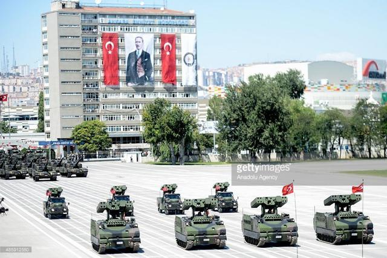 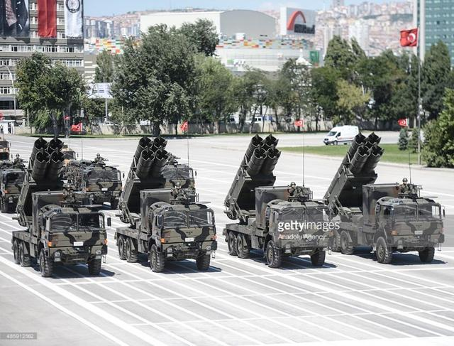 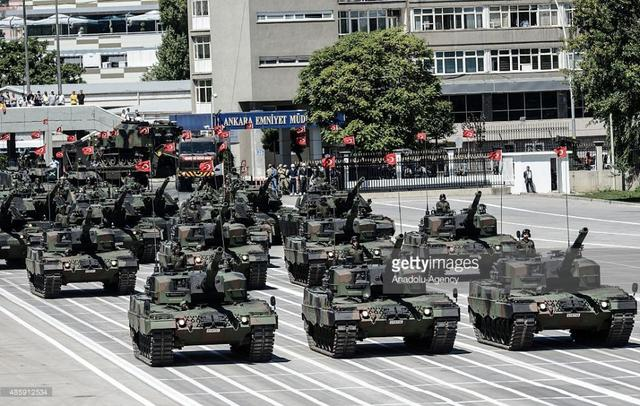 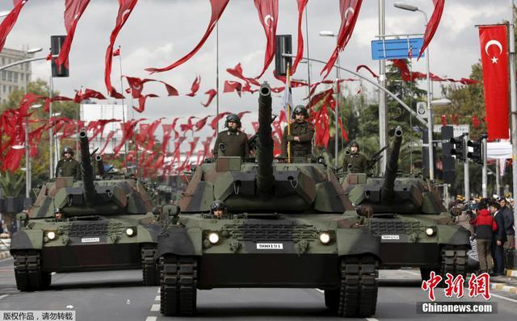 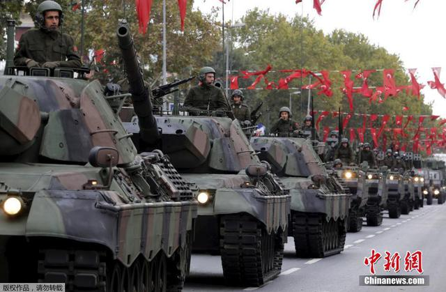 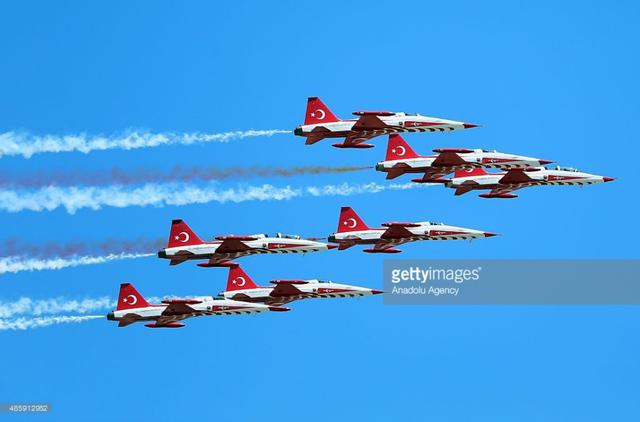
黎蝸藤：俄羅斯爲何不敢動土耳其？ @ 墙外楼
赵楚：土耳其给俄军事介入当头一棒 @ 腾讯新闻
克里斯托夫-金：
莫之许：
从实力来说，土耳其单独就可以干翻俄罗斯，更不用说土耳其是北约仅次于美国的第二大军力贡献国和地区最大军事存在了。
不考虑政治如库尔德问题阿拉伯国家感受，土耳其估计几个月就灭了ISIS。
胡锡进们会怎么为俄爹洗地，好奇并期待！
王占阳：
土耳其在历史上敢跟俄罗斯拼命，又有北约这个大后台，这应是俄国军机被击落后表现克制的主要原因。
战略忽悠局张召忠局座：
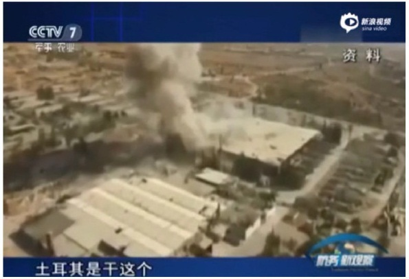 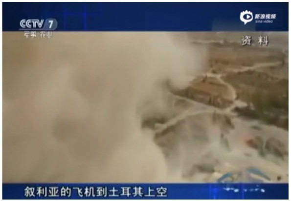 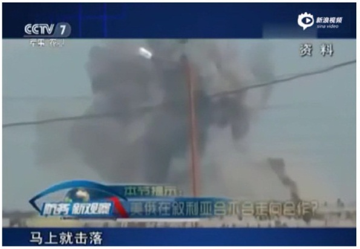 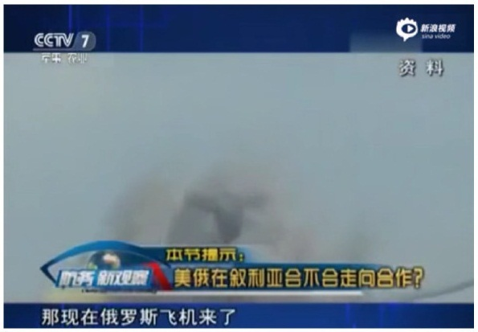 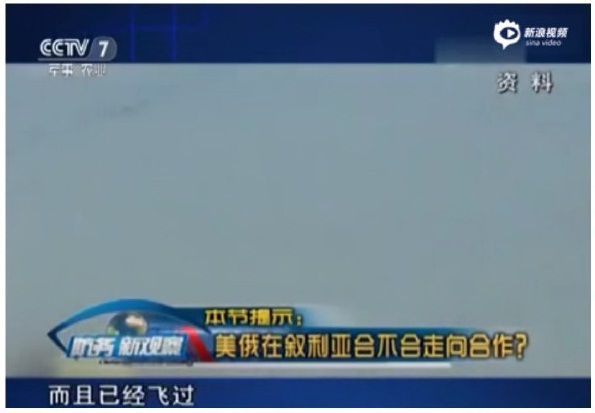 
（某不知名网友）：
（某不知名网友）：
普京哭晕在厕所：都说好了的，不能首先使用张召忠这种大杀器的！
看看新闻网：
“是他让我干的。”
“谁？”
“就是那个家伙”
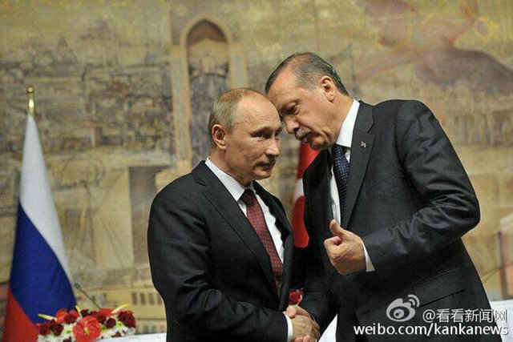
普京粉丝团：
一张照片形容现在的俄土形势…
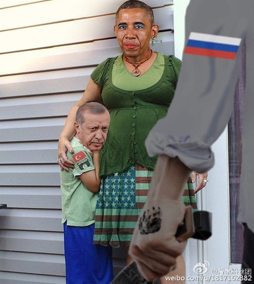
【论土耳其击落俄罗斯战机对于中国的影响】
俄罗斯出兵土耳其，北约诸国介入，中东战火四起 伊拉克、沙特、卡塔尔、伊朗、约旦将一片狼藉；
朝鲜借机攻打韩国，美国分身乏术，日本派出自卫队，本土遭遇朝鲜核打击，朝日韩一夕之间也不复存在...
发现什么了吗？国足终于有机会出线了！
和菜头：
“三十年前的今天，土耳其人打下了一架俄罗斯人的战机…”
“爷爷，你都说八百遍了！”
王大猫的回忆被孙子不耐烦地打断了。他长叹一声，紧了紧身上的兽皮，挪动身体向火堆靠近了一些，借着亮，继续打磨石簇箭头。
这时，山洞外传来孩子们的欢呼，他知道，狩猎队回来了。
※范强※法特姗瑟希蒲※：
来自俄罗斯的漫画，源自普京声称的“土耳其向俄罗斯背后捅刀子”。
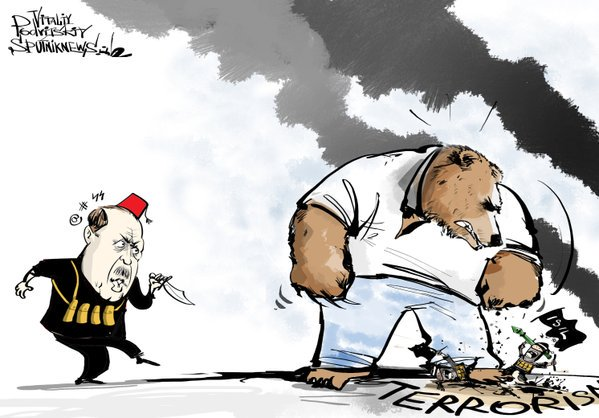
laoyang945：
严正警告土耳其，如果再一意孤行，中国将关闭所有土耳其烤肉店
（编程随想注：下面是一些老外的漫画）
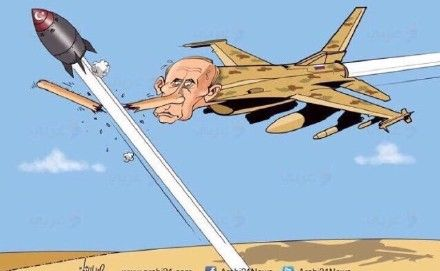 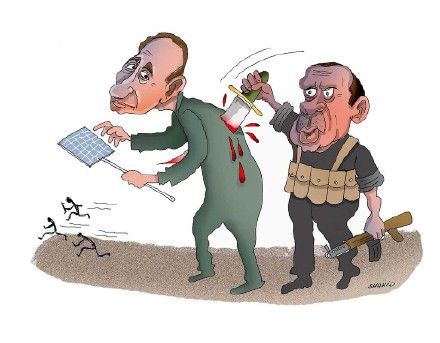 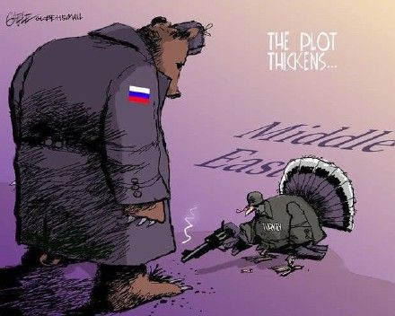 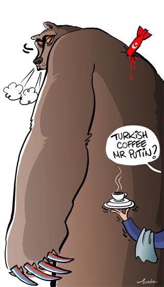
（编程随想注：俄罗斯方面指控说，伊斯兰国每天向土耳其走私60万吨石油，价值达150万美元。而（土耳其总统之子）Biloi 利用油轮将这些石油倒卖给以色列与日本）
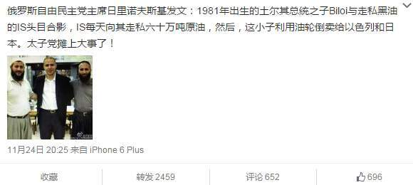 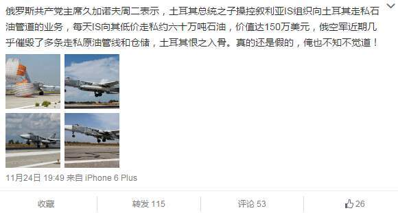
（编程随想注：下面是对上述言论的反驳）
唐驳虎：60万吨原油是什么规模你知道么？ @ 墙外楼
破破的桥：
那个盛传的土耳其总统儿子和ISIS石油走私人员的合影，是个很老的谣言。
照片取自他在某餐厅吃完饭后和店员合影。
拿脚趾头想想，就算人家参与走私，也不可能是傻瓜好嘛。
中国的新闻从业者对网上谣言八卦真是照单全收。
不过现在也发现，普京但凡说句话，中文网站上立刻就有与之相配合的谣言出来。挺有意思。
南宫山82：
敢打我家飞机，我就......用鸡蛋砸你窗户！
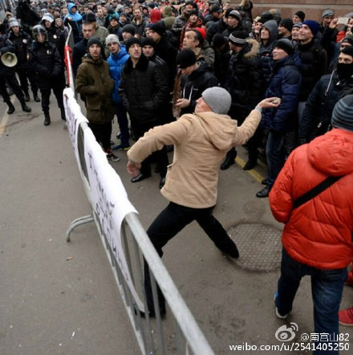 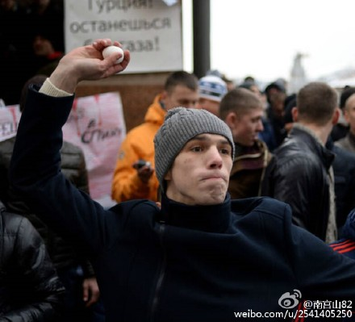
今天下午三点：
不少莫斯科民众在土耳其驻俄罗斯大使馆外聚集抗议，人们高呼着各类抗议口号，还举着“埃尔多安是杀人凶手”之类的标语，一些情绪激动的民众还向大使馆扔掷石块和鸡蛋，大使馆不少窗户被打碎。
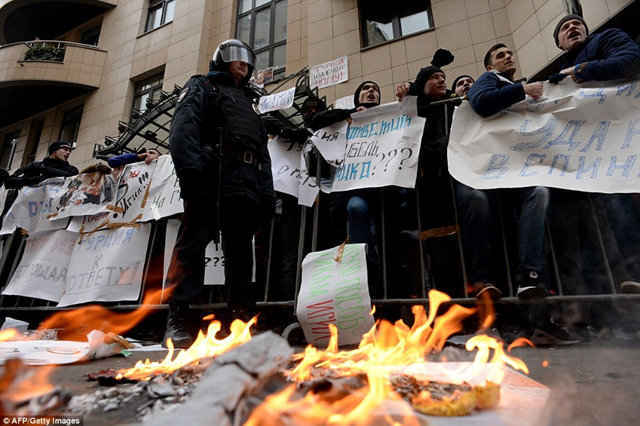 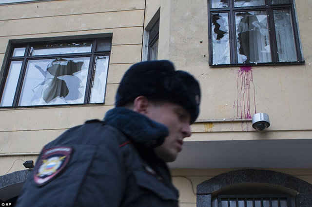
夜郎国主：
老毛子的社交论坛炸窝了——（土耳其）厄尔多安说，俄罗斯战机来了还打！
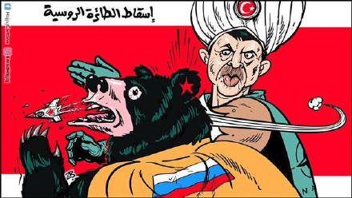
荣剑2001：
吴稼祥没微博号了，他在微信上说：我总觉得鄙国崇拜KGB普京的人，不是有贱妾情结，就是有受虐狂情结。
此话引来不少点赞，有说？？？？“确诊了？？？？”。
当下中国有几大怪，普京粉远多于普世粉，应在前三之列。
从沙俄到苏俄，中国吃其亏之大难以尽数，到了毛时代，苏修是头号敌人，谁知今天却把普京当祖宗供起来了。
郑州一纺织：
一个GDP与墨西哥或西班牙相当的国家，受到占全球经济总量一半的国家制裁，全国经济萎缩5%
但同时卷入两场武装冲突，要与世界上力量最强的军事同盟对抗。
如果不说这是俄国，你八成认为这是个疯子或精神病统治的国家。
神州许多人正是把这样一个国家的元首作为楷模崇拜。
怪异如斯，亘古少见。
dearemon：
普京随便加了几个群，发现中国网民已帮他制定了28种应对土耳其的方案。
其中16种能让A股重归5000点，12种顺带解决中国男足世界杯出线问题。
鹤总的游戏人生：
比白鹅还要忠于鹅毛的就是一群黄鹅，每次洗地都会被啪啪打脸。看，打脸文又来了。
三进三进：
普京今天的处境，和中国当年的慈禧太后一样，和世界几个国家同时宣战，陷于垂死挣扎的困境！
中国太监再卖力造谣救主也无济于事！
据土耳其国营通信社安纳多卢通信社11月26日报道：
俄军空袭了叙土边境的一个土耳其运输车队，该车队当时正在叙利亚阿勒颇省边境城镇阿扎兹附近前进，是一个救援车队。
阿纳多卢通信社报道称，俄军空袭造成车队7人死亡10人受伤。
土耳其方面宣称，该车队正在向难民运输补给。不过目前并没有确实证据，证明是俄军进行了空袭。
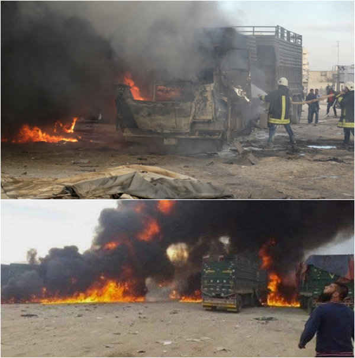
【俄罗斯的渣渣行为】
俄罗斯空袭了土耳其境内的人道主义车队，说明了俄罗斯确实不是去反恐的，铁证如山。这回，俄罗斯真的是连道义制高点都木有了。赔了夫人又折兵。人家打你入侵的飞机是合理，但是你攻击人家的救援车队，不管什么都是错的！
so如果说俄罗斯懂正义，螃蟹都会笑。
刘尚东11：
如果，土耳其车队被炸的确是普京的报复，那么，这足以显示俄罗斯和普京的软弱。
普京如果真强悍且理智，只能采取以其人之道还治其人之身的方法，打掉土耳其的战机，而非这样偷偷摸摸袭击地面车队。
hooyong：
轰炸民用车队，普京就是个懦夫！
@克里斯托夫-金
【快讯】俄罗斯渴望与美国法国甚至土耳其合作打击IS。
但奥巴马警告，俄国须专注轰炸ISIS才有合作可能。
哇塞，与美法结成联盟还OK，与土能尿到一壶吗？
普京认怂了，但西方可不一定买账，想舔都不给机会，多么尴尬。
说到底，这个动荡不安的世界就是实力较量。
草祭：
俄罗斯战机被土耳其击落，使俄面临决择的严重考验。
如果俄反击、报复，战争就可能面临开打，以俄目前经济状况不足以支撑二年。
如果俄沉默，俄立即就会变成二流国家，在以后的国际事务中更没有话语权。
一个国际上的强权国家如美国，必仰赖金融、科技和军事之优势，光有军事优势的俄其实就是一只病猫。
fxh588：
【俄将向叙利亚运送S-400防空导弹 用途不明】
俄罗斯卫星网报道，俄防长绍伊古表示，俄将向叙利亚赫米姆空军基地运送S-400防空导弹系统。
目前，参与打击叙利亚和伊拉克IS据点的国家、如美国、英国、法国等都是采用空袭的方式。
俄方目前并未说明这一尖端防空系统用于何种目的。IS并无空中力量。
他乡异客：
在飞行员被射杀的视频流出后，美国普通民众的舆论普遍导向俄罗斯，（是民间，不是媒体）。
毕竟在文明社会看来，射杀毫无反抗能力的士兵与IS所作所为无异，是典型的野蛮和恐怖行为。
这次土耳其只怕在舆论上先失一城。
俺博客上，和本文相关的帖子（需翻墙）：
每周转载：缅甸军机多次越境并炸死多名中国公民（大量网友热议）
每周转载：关于“俄罗斯卢布崩盘”的媒体报道和网友评论
伊斯兰教极端主义溯源——“《查理画报》惨案”和“尼日利亚大屠杀”随想
伊斯兰教为何如此奇葩？——关于“巴黎连环恐怖袭击”的随想
★事件背景介绍
叙利亚地图
两种战机的照片
被击落的俄罗斯苏-24战机
苏-24的俄军飞行员尸体被叙利亚反对派武装“土库曼旅”发现，且已经死亡。
（编程随想注：“叙利亚反对派”跟“伊斯兰国”是【不同的】武装派别，参见前面的“叙利亚内战图”）
叙利亚反对派武装土库曼旅还公布了从飞行员身上缴获的两个把柄类物件，相信是俄飞行员降落伞上的某个部件。
俄前往搜救的直升机被土库曼旅武装人员击毁
土耳其递交给联合国的一份情况报告中称：
11月24日早，2架国籍未知的SU-24战机飞向土耳其领空。
土耳其通过“紧急”频道5分钟内警告了它们10次，要求往南飞。但这两架飞行在19000英尺的战机最终进入土耳其的领空并持续17秒钟。
之后，一架驶离，另一架则被土耳其空军击落，坠毁在叙利亚境内。
奥巴马表态：敦促俄土两国必须通过谈判解决问题
他指出，保卫自己的领土和领空是一国正当的权力。
俄国如果真的意在打击IS，就不会把空袭目标锁定在非伊斯兰国的土族武装上。
“问题出在俄国把太多精力用在支持阿萨德而非打击IS上”
土耳其为何击落俄罗斯战机？ @ 纽约时报
“个人来说，我预见到了会有这样的事情发生，因为过去的几个月里，已经出现了太多类似的事，”土耳其国防部副部长伊斯梅尔·德米尔(Ismail Demir)在接受采访时说。“我们的交战规则十分明确，任何一个主权国家都有权保卫自己的领空。”
尽管这是事实，但一些分析师表示，埃尔多安还有几个微妙的理由允许土耳其飞行员开火。这些理由包括：土耳其在一系列议题上对俄罗斯的不满，其范畴甚至超出了叙利亚；如何解决叙利亚这个大难题；以及俄罗斯最近一直在战机坠毁地带对与土耳其有紧密族群关系的土库曼村落进行轰炸。
......
土耳其问题分析师索内尔·恰阿普塔伊(Soner Cagaptay)表示，土耳其已经被迫将自己的宏伟计划从“推翻阿萨德”降格为“在机会来临时在谈判桌上占有一席之地”。
“这就需要土耳其支持的反对派能继续坚守在叙利亚，而我认为，土耳其担心，俄罗斯对土耳其支持的反对派在叙利亚北部的地盘进行轰炸，正在动摇他们的领地，进而会影响土耳其未来在叙利亚的输赢，”恰阿普塔伊说。“这就是为什么土耳其会在叙利亚内战中采取这样的激进立场，目的是防止土耳其支持的反对派失败，让他们能保住自己的地盘，这样土耳其才能对叙利亚的未来有发言权。”
俄国将对土耳其采取大规模经济制裁 @ BBC
战机事件让俄罗斯与土耳其撕破脸 @ 纽约时报
★俄土双方扯皮
俄罗斯到底有没有进入土耳其领空？双方各执一词。
（红色——俄罗斯声称的飞行路线；紫色——土耳其声称的飞行路线）
幸存飞行员：未曾收到土方警告
被击落战机里幸存的俄罗斯飞行员说，不论是从视觉角度还是无线电方面，都没有收到土方的任何警告。
俄军方宣布，为保证类似悲剧事件不再发生，今后俄轰炸机在叙利亚上空执行空袭任务时，将一直有战斗机实施掩护。
土耳其军方公布录音——击落俄机前曾经发出警告 @ 新浪新闻
土耳其军方今天公布录音显示，在接近叙利亚边界击落俄机前有发出警告。
在录音中可以听到有人以英语说：“这是土耳其空军的警告，你正接近土耳其空域，立即调头向南。”并且重覆这项警告多次。
★网友分析双方的扯皮
破破的桥：土耳其击落俄罗斯战机的事件背景介绍 @ 新浪微博
我个人认为：打飞机这件事跟ISIS一点关系也没有。从这个角度展开阴谋论，表示论述者在两个方面有误判：一是俄军对ISIS的态度，二是土耳其对ISIS的态度。
......
个人判断这是一起在预想中的偶发事件：
1.俄军机在拉塔基亚-伊德利卜做日常巡航飞行，照常侦查或轰炸反抗军地区。
2.该环形飞行区在土耳其南部边境的魔性突出部这块要绕个很陡的弯，而飞行员倾向于越境抄近路走。俄军也不是第一次抄近路。土边境部队已很不满。
3.土耳其在这个位置此前数年已经击落过多架叙政府军战机，也是因为绕近路。
4.这件事是一次典型未受高层授意的边境摩擦。土耳其和俄罗斯都不愿意看到事态扩大，私下里报复一两下是可能的，但不会有什么后续的大型军事行动。尽管双方都不会后退，但这件事会被作为即成事实直接揭过去。本人欢迎俄罗斯来打我的脸。
5.这件事跟ISIS一点关系也没有，俄军这架飞机也不是去轰炸ISIS的（自从介入以来，俄9成左右的空袭一直都在反抗军地区），土耳其也不是因为俄军轰炸ISIS去打它的。
黎蝸藤：
土耳其的事說兩句。毛軍機闖入突厥領空不只一次，之前一直突厥一直在抗議，毛不當一回事。
從國際法上說，突厥擊落闖入領空的毛軍機符合國際法。
突厥是北約成員國，入侵突厥等於和整個北約作對。毛可以欺負烏克蘭和格魯吉亞，但不敢直接入侵北約國家。普京再悲憤也沒有用。
黎蝸藤：
俄羅斯又被打臉了，救回的飛行員剛說沒有聽到土耳其的警告，土耳其就放出錄音證實多次發出警告。想想也知道了，土耳其能夠向聯合國細緻地說出5分鐘警告十次，必然有充分證據。豈是俄羅斯人信口開河可以否認的？
陈如是说：
看图。这楔角宽度不过十几公里，一架巡航速度的飞机从进入到离开，只需要一分多钟。而地面防空系统从追踪、识别、锁定、发射到击中，一分钟是不够的。以火鸡的射击水平，最大的可能是，前面四个步骤是在毛子飞机尚未进入火鸡领空时就完成了……这对毛子而言敌意已经足够。而且飞机还掉在境外。火鸡杯具
理性的白痴：
一，毛子军机去打的不是ISIS而是土耳其支持的叙反政府武装；
二，土耳其确实在伏击毛军机，追踪锁定应该是在土境外就做的，但是毛军机应该是中间确实有越境土领空，不然土不会有这么精准的准备；
三，土是北约成员国，所以不会演变成战争
三进三进：
采访俄罗斯幸存飞行员的记者，确实有部分是穿短袖体恤和短袖衬衫，这录相是夏天的季节拍摄的。连央视也被欺骗了。
★网友点评“俄罗斯怂了”
俄外长拉夫罗夫：
俄罗斯不准备与土耳其开战
普京：
若再次发生类似事件，俄方将作出回应
KenWong_：
酒吧里，普京正吹牛当年打架多么狠，突然后脑袋上挨了土耳其一啤酒瓶，顿时血流满面。
普京手捂着脑袋回过头来说，你有胆再敲老子一下试试？
#网友评土耳其击落俄罗斯战机
学者从经济上谈俄困局：打掉牙肚里咽算了？ @ 腾讯新闻
种种迹象表明，俄罗斯的经济比外界报道的要糟糕得多，尽管俄罗斯政府竭尽全力地控制通货膨胀，但美金对卢布的汇率仍然上升到1比65左右，比年初上涨了35%以上。有专家预测，这个汇率很有可能到年底达到1比70 。
同时，俄罗斯的贫困人口在不断增加，月平均收入在1000元人民币的贫困人后已经达到了2300万以上，达到了全国人口的16%以上。——而这些，还仅仅是俄罗斯官方公布的数字。
俄罗斯的军火生意似乎也并无起色，虽然前段有传言中国斥资20亿美金，购买俄罗斯战机，但从2013年到现在，俄罗斯的军火生意并不好做，几乎没有接到什么大的订单。中国加快了国产武器的研发，已经逐渐形成体系，不需要那么多俄罗斯武器。而委内瑞拉、埃及这样的小兄弟购买力不强。加上当年分家的时候，军火本身也被乌克兰拿走了几个大头，如今俄罗斯的军火已难成支柱。
......
也正式因为这样，当战机被击落以后，我们并没有看到俄罗斯强硬的表态，也没有看到普金像跟日本人说话一样目光如炬，声如洪钟。
土耳其的挑衅，让我们看到了一个跌份、掉价的俄罗斯。俄罗斯武装力量的总参作战部部长，甚至还在反复地解释：我们没越界，我们没越界。委屈地像个孩子。
在镜头面前，普金也失去了前段时间训斥日本记者的硬汉形象，甚至都没有表示强烈的谴责，而是在说：“我们在打击恐怖势力，却有人在背后向我们捅刀子。”仍然是以悲情为主基调。
在2015年的冬天，俄罗斯已经不是那个曾经强大的俄罗斯，它已经虚弱得让人怀疑，他当年是否真正的强大过。土耳其扮演了一个调皮孩子的角色，他在其他大人的怂恿下，突然出手，掀开了俄罗斯的裙子，结果让全世界都看到了，俄罗斯没穿内裤。
valkyrie：俄罗斯军机被土击落真相——普京这次为什么怂了？ @ 共识网
Paul郑褚：
呵呵，土耳其是北约国家，你们普大大敢打土耳其那才是吃了豹子胆。
春秋药王：
我一直觉得，硬了那么久的普京，这次会巧妙地疲软。
国内经济的持续下滑，已让俄罗斯打不起一场像样的战争。而且土耳其的背后是强悍的北约。
所以普京很可能会发动爱国青年，把土耳其骂个狗血淋头，然后在国内抓俄奸，抵制土货，砸土产车，在推特上核平土耳其，让鹰嘴将军怒发冲冠，最后红光满面圆满收场
昆仑风：
普京大帝太不给黄俄干儿子面子了。
英雄的俄罗斯人民、战斗民族、世界和平的主要力量，你倒是打啊！不然咱爷儿俩的脸面都没地儿搁了，不是嘛？
莫扎特93：
以普特勒同志为核心的新沙皇当局，实在是没胆量“对土耳其发动战争”。
土耳其这个国家其实也没啥，不过是北约一成员国。但它的背后是强大的美国、是顶尖级现代化装备、横跨欧美的国际军事组织——北大西洋公约组织。
你和你那个跟着你瞎起哄的傻兄弟惹得起人家吗？不过你终于明智地认识到，土耳其可不是中国，可不是那么容易欺负的。
★与天朝的对比
网易网友：
【土耳其太小家子气】
俄国军机误入土耳其领空被击落，土耳其真是太小气了。
这让我想起了缅甸军机五次入侵我国领空四次投弹，炸死炸伤我国边民。
我国的反应是继续援助缅甸30亿美元，这充分体现了一个大国的风范和气度。
（某不知名网友）：
土耳其没有航母，没有核武，上去就打了天朝干爹一记耳光，真牛逼！
天际流云：
1964年6月，中国在老挝康开的外交机构被美国飞机炸，死一人重伤5人，不要说赔偿，连道歉也无一个的！
几乎所有强国、弱国都敢惹毛时期的中国。
1964年，中国在巴西的准外交人员9名，连同家属一起被巴西当局逮捕，受尽折磨，关押审判达一年多！
说那个时代有多高的国际地位，只是吹嘘大话而已。
铁塔媳妇33：
【土耳其公布的资料显示，俄国战机假借反恐轰炸叙利亚反对派时飞越土领空，被土战机击落】
普京下令撤回土耳其叙利亚边界的所有俄军。一个小小的土耳其，都敢把侵入领空的老毛子的战机击落。
那个天天勃起的世界老二，被山姆大叔的战舰、航母、轰炸机侵入领海领空，却保持着极大克制。
瀚海紫玉山：
一个挨了500个电炮一声不敢吭的怂货，居然议论起被人撞了一下就直接把撞人者打趴下的好汉是不是反应过激了。
你个怂货有资格么？
Boksei689：
土耳其比貴國強多了。
★网友点评“俄罗斯 PK 土耳其”
俄军已经玩不起坦克海——土耳其陆军坦克数量比俄军都多 @ 今日头条
苏联和俄罗斯最引以为骄傲的就是其庞大的陆军，但是近些年以来，俄罗斯陆军的实力和规模实际上是在下降当中。 如果不计算核武器，俄罗斯陆军即便对土耳其陆军，也并不存在太多优势。（编程随想注：以下照片来自上述这篇文章，是关于土耳其的部队）
......
俄罗斯陆军现在的装备水平，总体来看不仅低于西方也同样低于中国。现在的俄罗斯已经摆不出经典的坦克海，因为土耳其陆军的坦克现在比俄罗斯还要多。俄罗斯只有2500辆坦克，土耳其却有超过3600辆坦克。其中包括了大量的豹式坦克，对俄罗斯绝大部分坦克都形成技术优势。
土耳其还有5100辆以上的装甲车辆，就是大炮也绝对不少，达到6100门各种火炮火箭炮等等。 土耳其不是乌克兰！美军在土耳其有30个基地的使用权，有权利在危机时刻向土耳其部署军队，包括地面部队。
在土耳其有预先准备的，为北约盟军进入土耳其使用的武器储备库，调运和使用港口机场的方法，以及医院，通信和交通系统。在土耳其还有北约的2个作战指挥中心和1个联合多国陆军快速军团司令部。
俄罗斯想对土耳其使用在克里米亚，格鲁吉亚那种快手术刀般的快速打击，基本上没有很大可能性。因为土耳其在北约属于前沿国家，是长期备战的，不是乌克兰那种自废武功的国家。
黎蝸藤：俄羅斯爲何不敢動土耳其？ @ 墙外楼
首先，現在已經明確是俄羅斯戰機闖入土耳其領空。其實這不是什么新聞，早在俄羅斯開始在敘利亞軍事行動的時候，土耳其已經因領空被侵犯而向俄發出抗議和警告，但俄羅斯不當一回事。這次事發的時候，土耳其在5分鐘內對俄戰機進行10次警告，但俄戰機仍然強行闖入其領空。土耳其為了捍衛領土主權和完整，擊落闖入的戰機符合國際法，無可厚非。值得指出的是，俄戰機闖入的領空，是土耳其領土上空的領空，不是領海上的領空，故沒有“無害通過權”一說。
俄羅斯對入侵土領空一事疾口否認，但提出的理据卻是戰機是在敘利亞境內被擊中和墜毀的。土耳其給聯合國安理會的信中寫得很清楚，土耳其戰機發動攻擊的時候，俄戰機還在土耳其境內。所以，就算戰機在被擊中和墜落時已經回到敘利亞境內，土耳其的行為也符合國際法。俄羅斯救囘的飛行員又說，聼不到警告，可是土耳其隨即放出錄音，證實了事先警告確有其事。俄羅斯再一次被打臉了。其實，土耳其敢於第一時間給聯合國安理會發信，必然是有證有据，有理在手心不慌。
其次，盡管俄羅斯一向霸道，但卻不敢和土耳其硬碰。土耳其是北約成員國，這與被俄羅斯入侵的烏克蘭和格魯吉亞都不一樣。北約成員國之間有防衛同盟協議。俄如果膽敢入侵土耳其或者對其進行攻擊，北約盟國必定會一致對抗。北約總部和美國總統奧巴馬也放言堅決站在土耳其的一方。事實上，在俄羅斯非法強行奪取克里米亞之後，歐洲已經警覺和提高對俄羅斯的防御能力。一旦北約和俄羅斯開戰，俄羅斯不但斂不到好處，反而連克里米亞也可能要吐出。
第三，即便不算上北約盟國，土耳其也絕非烏克蘭一樣不堪一擊。土耳其有8000萬人，軍力接近40萬。在美國全球火力網站（globalfirepower.com）2015年（不考慮核武器）排名中，土耳其總體戰力排全球第十，居中東國家首位。盡管這與俄羅斯排第二的位置和80萬兵力相比似乎還有差距，但這是兩國的總體戰力的比較。考慮到俄羅斯不可能出全力攻打土耳其，而土耳其盟國眾多可彌補資源上的劣勢（即便盟國不軍事介入，也可以補充資源），俄羅斯地大的優勢（提供抗打擊的縱深）無法在侵略戰中發揮，土耳其的常規裝備并不在俄羅斯之下，以及俄羅斯受西方制裁經濟不景等諸多因素，俄羅斯即便和土耳其單挑也不見得有優勢。
赵楚：土耳其给俄军事介入当头一棒 @ 腾讯新闻
土耳其本次如此果断击毁俄战机，也是料定俄罗斯目前的国际政治困难处境，及其总体力量的局限性。俄罗斯除了自身军事实力有限，基本民意和国情不会支持像当年阿富汗那样的大规模战争，其在本地区没有可靠的盟友网络和行动支持体系，这也是很现实的困境，这些内外困难都不是立即有根本改善的可能的。熟悉历史的人应该知道，历史上的俄罗斯帝国与奥斯曼土耳其进行过漫长的地区权力斗争，这些历史的斗争给在两国决策中留下了浓厚的猜疑的阴影。冷战期间，土耳其是北约南部防线对抗前苏联的战略基地。而冷战结束后，由于俄土力量的消涨变化，俄罗斯处于历史性的战略收缩期，因而俄土地区权力博弈的历史戏剧在很大程度上正在从高加索到中东的广大地区死灰复燃。这一大背景也是理解土耳其对俄罗斯军事介入叙利亚政策持反对意见的一个很重要因素。
克里斯托夫-金：
【俄罗斯不一定打得过土耳其】
可别小看土耳其，真正与俄罗斯打起来，也不一定输。当然前提是，俄罗斯不敢使用核武器，谅普京也不敢。
俄罗斯早已今非昔比，冷战时期华沙条约国与北约联盟对抗的局面不复存在，即使是未解体前的苏联，其战斗力也不敢恭维，前苏军在上世纪70-80年代入侵阿富汗时，现代化军力高达15万人，却几乎不占优势，游击队式的阿富汗人民奋起抵抗，苏军伤亡3.5万人，耗资400亿美元，最后以失败告终，狼狈撤军。
国内一大批不用脑子的普粉，总喜欢舔普京，称之为大帝，把俄军吹成斯大林时代的苏联红军哥萨克骑兵，其实，30年河东30年河西，看看俄战机空袭叙利亚的装备和定点轰炸效率，与北约的空中精确打击根本不在一个水平线上。
况且，土耳其还有北约的强大盟国后盾，而俄罗斯孤家寡人，作为与普京走得很近的中国，连周边南海国家屡屡挑衅都不敢出手，只有抗议再抗议，更不可能掺和俄罗斯与土耳其的军事冲突，这是金博士铁板钉钉的预言。
看看俄罗斯与土耳其军力对比，即使没有北约后盾，俄也占不了优势。
莫之许：
从实力来说，土耳其单独就可以干翻俄罗斯，更不用说土耳其是北约仅次于美国的第二大军力贡献国和地区最大军事存在了。
不考虑政治如库尔德问题阿拉伯国家感受，土耳其估计几个月就灭了ISIS。
胡锡进们会怎么为俄爹洗地，好奇并期待！
王占阳：
土耳其在历史上敢跟俄罗斯拼命，又有北约这个大后台，这应是俄国军机被击落后表现克制的主要原因。
★网友的调侃
战略忽悠局张召忠局座：
就是空中相遇了以后怎么办？（相关视频）
交火的话，双方什么情况下才能交火？
土耳其是干这个。
叙利亚的飞机飞到土耳其上空，
马上就击落。
现在俄罗斯飞机来了，
而且已经飞过，
你给我击落看看？
（某不知名网友）：
（某不知名网友）：
普京哭晕在厕所：都说好了的，不能首先使用张召忠这种大杀器的！
看看新闻网：
“是他让我干的。”
“谁？”
“就是那个家伙”
普京粉丝团：
一张照片形容现在的俄土形势…
【论土耳其击落俄罗斯战机对于中国的影响】
俄罗斯出兵土耳其，北约诸国介入，中东战火四起 伊拉克、沙特、卡塔尔、伊朗、约旦将一片狼藉；
朝鲜借机攻打韩国，美国分身乏术，日本派出自卫队，本土遭遇朝鲜核打击，朝日韩一夕之间也不复存在...
发现什么了吗？国足终于有机会出线了！
和菜头：
“三十年前的今天，土耳其人打下了一架俄罗斯人的战机…”
“爷爷，你都说八百遍了！”
王大猫的回忆被孙子不耐烦地打断了。他长叹一声，紧了紧身上的兽皮，挪动身体向火堆靠近了一些，借着亮，继续打磨石簇箭头。
这时，山洞外传来孩子们的欢呼，他知道，狩猎队回来了。
※范强※法特姗瑟希蒲※：
来自俄罗斯的漫画，源自普京声称的“土耳其向俄罗斯背后捅刀子”。
laoyang945：
严正警告土耳其，如果再一意孤行，中国将关闭所有土耳其烤肉店
（编程随想注：下面是一些老外的漫画）
★俄罗斯对土耳其的指控，以及网友的辟谣
（编程随想注：俄罗斯方面指控说，伊斯兰国每天向土耳其走私60万吨石油，价值达150万美元。而（土耳其总统之子）Biloi 利用油轮将这些石油倒卖给以色列与日本）
（编程随想注：下面是对上述言论的反驳）
唐驳虎：60万吨原油是什么规模你知道么？ @ 墙外楼
先不说别的任何事情，用脑子算算一天60万吨原油意味着什么？一桶原油大约140公斤，60万吨原油，折合430万桶原油。
中国2014年的原油日产量跃上新高，达到440万桶，也就是说，按日里诺夫斯基和久加诺夫的说法，IS控制下的日产量，和中国这个世界第四原油生产大国相当！
这可是大庆、长庆、辽河、华北、大港、渤海、胜利、延长、新疆、塔里木、西南油和海上等一大批大油田加起来的生产总量。是一个世界位居前列的石油大国，三大世界级石油公司全力以赴精心组织生产出来的。
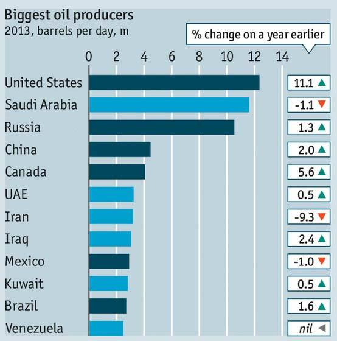 即使是美国、俄罗斯、沙特这世界产油三强，日产量也不过是1000万桶的规模。像伊拉克、伊朗、阿联酋、科威特这些OPEC主力成员、世界知名的原油出口大国的日产量都只有300万桶。其他OPEC成员就更少了。
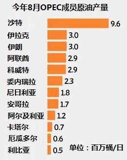 众所周知，IS控制的不过是叙利亚的东部，伊拉克的北部，这些荒漠地带。叙利亚在中东算是个贫油国，伊拉克的大油田集中在中南部靠近科威特和波斯湾的巴士拉等地。
IS的地域根本没有什么石油资源，哪里能凭空冒出一个世界第四的产量？鬼扯淡。
另外，美国空军已经公布无人机侦察照片核实，所谓俄罗斯炸毁的500辆IS运油车只有100辆左右。
......
破破的桥：
那个盛传的土耳其总统儿子和ISIS石油走私人员的合影，是个很老的谣言。
照片取自他在某餐厅吃完饭后和店员合影。
拿脚趾头想想，就算人家参与走私，也不可能是傻瓜好嘛。
中国的新闻从业者对网上谣言八卦真是照单全收。
不过现在也发现，普京但凡说句话，中文网站上立刻就有与之相配合的谣言出来。挺有意思。
★俄罗斯民间的反应
南宫山82：
敢打我家飞机，我就......用鸡蛋砸你窗户！
今天下午三点：
不少莫斯科民众在土耳其驻俄罗斯大使馆外聚集抗议，人们高呼着各类抗议口号，还举着“埃尔多安是杀人凶手”之类的标语，一些情绪激动的民众还向大使馆扔掷石块和鸡蛋，大使馆不少窗户被打碎。
夜郎国主：
老毛子的社交论坛炸窝了——（土耳其）厄尔多安说，俄罗斯战机来了还打！
★天朝民间的反应
荣剑2001：
吴稼祥没微博号了，他在微信上说：我总觉得鄙国崇拜KGB普京的人，不是有贱妾情结，就是有受虐狂情结。
此话引来不少点赞，有说？？？？“确诊了？？？？”。
当下中国有几大怪，普京粉远多于普世粉，应在前三之列。
从沙俄到苏俄，中国吃其亏之大难以尽数，到了毛时代，苏修是头号敌人，谁知今天却把普京当祖宗供起来了。
郑州一纺织：
一个GDP与墨西哥或西班牙相当的国家，受到占全球经济总量一半的国家制裁，全国经济萎缩5%
但同时卷入两场武装冲突，要与世界上力量最强的军事同盟对抗。
如果不说这是俄国，你八成认为这是个疯子或精神病统治的国家。
神州许多人正是把这样一个国家的元首作为楷模崇拜。
怪异如斯，亘古少见。
dearemon：
普京随便加了几个群，发现中国网民已帮他制定了28种应对土耳其的方案。
其中16种能让A股重归5000点，12种顺带解决中国男足世界杯出线问题。
鹤总的游戏人生：
比白鹅还要忠于鹅毛的就是一群黄鹅，每次洗地都会被啪啪打脸。看，打脸文又来了。
三进三进：
普京今天的处境，和中国当年的慈禧太后一样，和世界几个国家同时宣战，陷于垂死挣扎的困境！
中国太监再卖力造谣救主也无济于事！
★俄罗斯空袭土耳其人道救援车队
据土耳其国营通信社安纳多卢通信社11月26日报道：
俄军空袭了叙土边境的一个土耳其运输车队，该车队当时正在叙利亚阿勒颇省边境城镇阿扎兹附近前进，是一个救援车队。
阿纳多卢通信社报道称，俄军空袭造成车队7人死亡10人受伤。
土耳其方面宣称，该车队正在向难民运输补给。不过目前并没有确实证据，证明是俄军进行了空袭。
【俄罗斯的渣渣行为】
俄罗斯空袭了土耳其境内的人道主义车队，说明了俄罗斯确实不是去反恐的，铁证如山。这回，俄罗斯真的是连道义制高点都木有了。赔了夫人又折兵。人家打你入侵的飞机是合理，但是你攻击人家的救援车队，不管什么都是错的！
so如果说俄罗斯懂正义，螃蟹都会笑。
刘尚东11：
如果，土耳其车队被炸的确是普京的报复，那么，这足以显示俄罗斯和普京的软弱。
普京如果真强悍且理智，只能采取以其人之道还治其人之身的方法，打掉土耳其的战机，而非这样偷偷摸摸袭击地面车队。
hooyong：
轰炸民用车队，普京就是个懦夫！
★其它评论
@克里斯托夫-金
【快讯】俄罗斯渴望与美国法国甚至土耳其合作打击IS。
但奥巴马警告，俄国须专注轰炸ISIS才有合作可能。
哇塞，与美法结成联盟还OK，与土能尿到一壶吗？
普京认怂了，但西方可不一定买账，想舔都不给机会，多么尴尬。
说到底，这个动荡不安的世界就是实力较量。
草祭：
俄罗斯战机被土耳其击落，使俄面临决择的严重考验。
如果俄反击、报复，战争就可能面临开打，以俄目前经济状况不足以支撑二年。
如果俄沉默，俄立即就会变成二流国家，在以后的国际事务中更没有话语权。
一个国际上的强权国家如美国，必仰赖金融、科技和军事之优势，光有军事优势的俄其实就是一只病猫。
fxh588：
【俄将向叙利亚运送S-400防空导弹 用途不明】
俄罗斯卫星网报道，俄防长绍伊古表示，俄将向叙利亚赫米姆空军基地运送S-400防空导弹系统。
目前，参与打击叙利亚和伊拉克IS据点的国家、如美国、英国、法国等都是采用空袭的方式。
俄方目前并未说明这一尖端防空系统用于何种目的。IS并无空中力量。
他乡异客：
在飞行员被射杀的视频流出后，美国普通民众的舆论普遍导向俄罗斯，（是民间，不是媒体）。
毕竟在文明社会看来，射杀毫无反抗能力的士兵与IS所作所为无异，是典型的野蛮和恐怖行为。
这次土耳其只怕在舆论上先失一城。
俺博客上，和本文相关的帖子（需翻墙）：
每周转载：缅甸军机多次越境并炸死多名中国公民（大量网友热议）
每周转载：关于“俄罗斯卢布崩盘”的媒体报道和网友评论
伊斯兰教极端主义溯源——“《查理画报》惨案”和“尼日利亚大屠杀”随想
伊斯兰教为何如此奇葩？——关于“巴黎连环恐怖袭击”的随想
版权声明
本博客所有的原创文章，作者皆保留版权。转载必须包含本声明，保持本文完整，并以超链接形式注明作者编程随想和本文原始地址：
https://program-think.blogspot.com/2015/11/weekly-share-94.html
本博客所有的原创文章，作者皆保留版权。转载必须包含本声明，保持本文完整，并以超链接形式注明作者编程随想和本文原始地址：
https://program-think.blogspot.com/2015/11/weekly-share-94.html